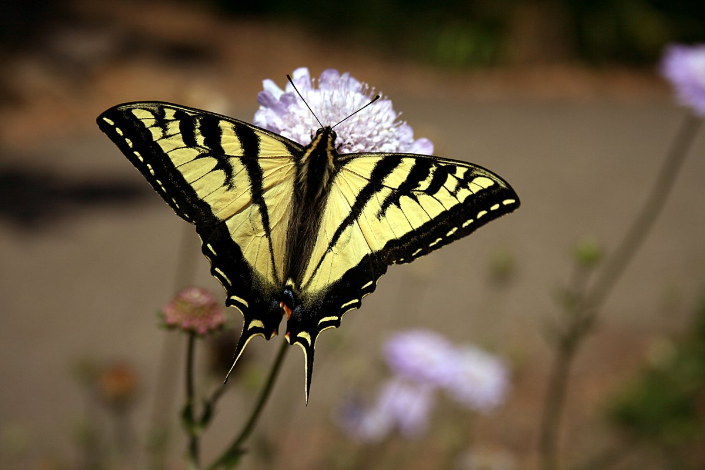
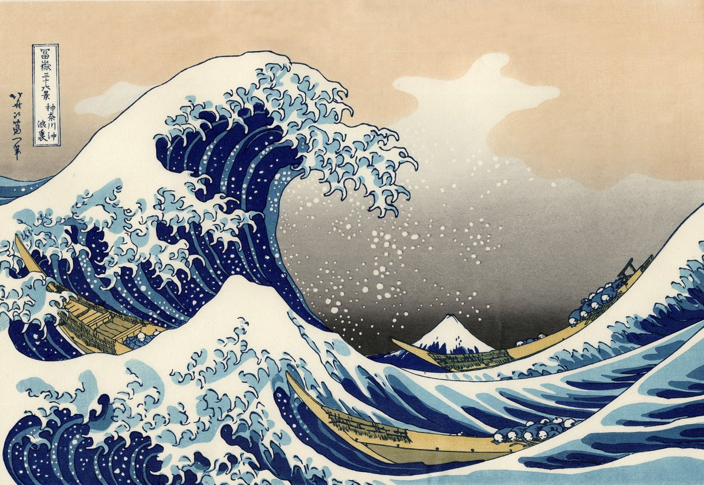
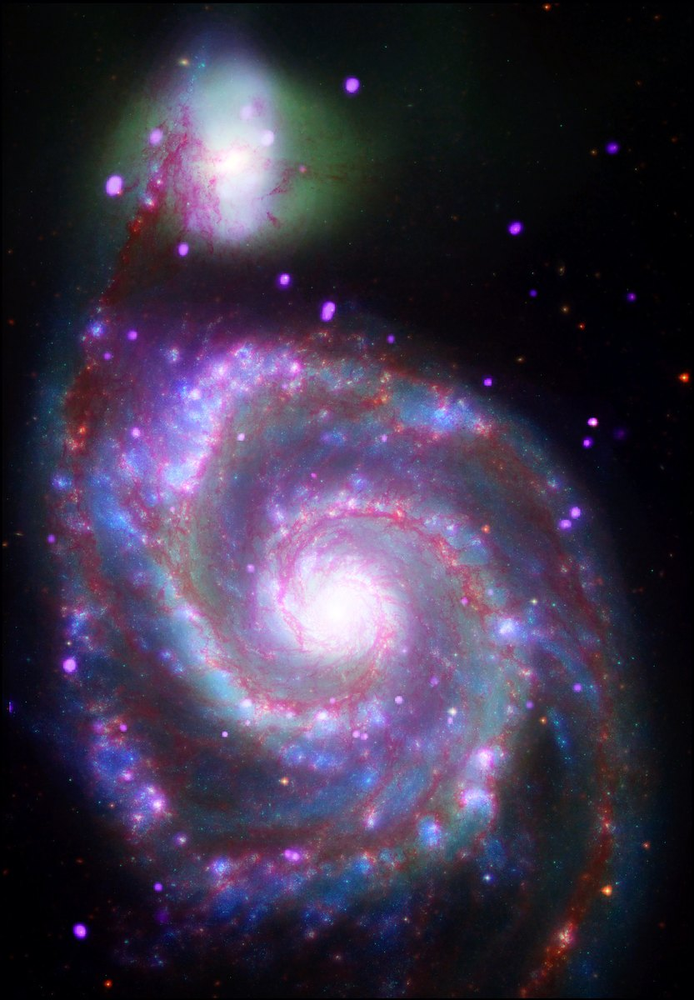
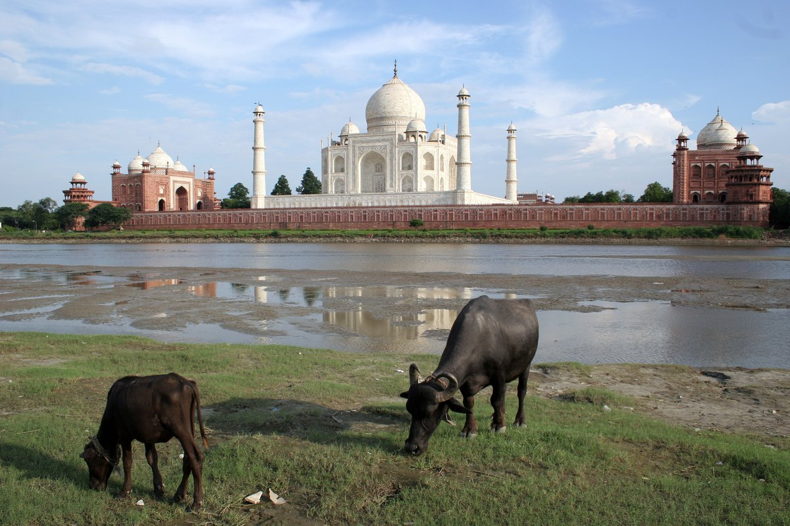

How does the arrangement of a composition change how stable, calm, or energetic it feels?
Stack every heavy image on one side of your collage and the whole piece feels like it might tip over. Spread the same pieces out and it feels steady. That feeling comes from a Principle of Design called balance, and it is one of the most important decisions you make when you arrange layers in a collage.
👀 PART 1 · LOOK FIRST
Balance is the way visual weight is arranged in a composition to create a feeling of stability. Visual weight is not literal weight; a large, dark, or highly detailed shape "feels" heavier than a small, light, or plain one. There are three main kinds of balance. Look at the three layouts below.

Mila Zinkova, Western Tiger Swallowtail, 2007. CC BY-SA 3.0. Wikimedia Commons
Symmetrical
Mirrored, formal, calm

Katsushika Hokusai, The Great Wave off Kanagawa, ca. 1831. Public domain (published before 1931). Wikimedia Commons
Asymmetrical
Different but balanced, dynamic

NASA, ESA, and the Hubble Heritage Team, Whirlpool Galaxy (M51). Public domain (NASA/ESA Hubble material). Wikimedia Commons
Radial
Arranged around a center point
Real examples above, not diagrams. Notice that asymmetrical balance is not "unbalanced," it uses different shapes and sizes that still feel evenly weighted.
💭 QUICK CHECK-IN · NO WRONG ANSWER
Which of the three balance types above feels most like your own personality or style?
📚 PART 2 · BALANCE IN A DIGITAL COLLAGE
Collage makes balance especially visible because you are literally placing separate pieces onto a canvas, one at a time, and can see the weight shift as you go. A few things add visual weight to a layer in a collage:
Size. A large cutout pulls more attention than a small one.
Value and color. Dark or highly saturated colors feel heavier than light, muted ones.
Detail and texture. A busy, detailed image feels heavier than a plain, smooth one.
Position. Elements near the edges or corners can visually "anchor" a composition; elements floating in empty space feel lighter.
These same four factors show up in real photographs, not just collage. Look at how each photograph below uses balance.
SYMMETRICAL · SIZE & VALUE

David Castor, Taj Mahal, 2008. Photograph released into the public domain by the photographer. Source: Wikimedia Commons. Notice the mirrored domes and minarets, equal in size and value on both sides of the reflecting pool.
RADIAL · DETAIL & TEXTURE
Photograph of the Library of Congress Thomas Jefferson Building dome, 2008. Public domain (photographer's own release). Source: Wikimedia Commons. The repeated, detailed ribs of the dome radiate outward from the center in even texture and spacing.
ASYMMETRICAL · POSITION
Ansel Adams, The Tetons and the Snake River, 1942. National Archives and Records Administration (US federal government work, public domain). Source: Wikimedia Commons. The river's curve on one side and the mountains' mass on the other are different shapes that still feel evenly weighted.
Symmetrical & radial
Best for a formal, calm, or centered feeling. In Pixlr E, use the ruler/guides to find the exact center of your canvas, then mirror or rotate copies of a layer around it.
Asymmetrical
Best for energy and interest. Balance one large, simple shape on one side with two or three smaller, more detailed shapes on the other, so the total visual weight feels even.
💡 PIXLR E WORKFLOW: TESTING BALANCE AS YOU BUILD
1. Zoom your canvas out so you can see the whole composition, not just one layer. 2. After placing each new layer, use the Move tool to drag it and watch how the overall weight shifts. 3. Toggle a layer's visibility (the eye icon in the Layers panel) on and off to compare the composition with and without it. 4. If one side feels heavy, try shrinking that element, moving it closer to center, lightening its color, or adding a small element on the opposite side to counter it.
🔍 PART 3 · BALANCE AMONG THE PRINCIPLES OF DESIGN
Balance is one of several Principles of Design that artists use to organize the Elements of Art (line, shape, color, texture, value, form, space) into a strong composition. It works alongside principles like emphasis (drawing the eye to a focal point) and movement (guiding the eye through the piece); a well-balanced composition often still has one clear focal point, it is simply not the only heavy thing in the frame.
Artists across history have used all three kinds of balance depending on the feeling they wanted. Formal portraits and religious art often use symmetry to feel dignified and orderly. Many photographs and modern designs use asymmetry to feel more natural and alive, since the real world is rarely perfectly mirrored. Mandalas, rose windows, and many logos use radial balance to focus attention on a single center.
⚡ TRY IT · NAME THE BALANCE
Read each case, decide, then check your answer.
A composition has one large photo on the left and three small cutouts grouped on the right that together feel equally heavy. What kind of balance is this?
A collage has one small image dead center with six identical cutouts arranged evenly around it in a circle. What kind of balance is this?
⚠️ WORTH KNOWING · AI LAYOUT SUGGESTIONS
Some design tools can auto-arrange elements on a page for you. Those tools optimize for tidy grids, not for the specific feeling you are trying to create. Deciding whether your collage should feel calm, energetic, or centered, and choosing the balance type that produces that feeling, is a judgment call this course is teaching you to make yourself.
📝 VOCABULARY
BalanceThe arrangement of visual weight in a composition to create a feeling of stability.
Visual WeightHow much a shape or element seems to "weigh" based on its size, color, detail, and position.
Symmetrical BalanceA mirrored arrangement of matching elements on either side of a center line.
Asymmetrical BalanceAn arrangement of different elements that still feels evenly weighted.
Radial BalanceAn arrangement of elements evenly around a central point.
Focal PointThe part of a composition that draws the most attention.
Principles of DesignThe guidelines, including balance, artists use to organize the Elements of Art.
CompositionHow the parts of an artwork are arranged.
➡️ WHAT YOU'LL DO NEXT (IN CANVAS)
1
Module 18.01 Mini Lesson: Three Balance Sketches
Arrange the same three shapes in Pixlr E three ways: symmetrical, asymmetrical, and radial. Completion grade.
2
Module 18.02 Discussion: Balance in Your Collage
Name the balance type in your Module 17 collage, point to what adds weight, and respond to a classmate.
3
Module 18.03 Quiz: Balance in Composition
8 questions, auto-graded in Canvas.
4
Module 18.04 Studio Project & Reflection: Balance
Revise your Module 17 collage (or a new short composition) to demonstrate one balance type, then write a short reflection on the choice. Your graded artwork this module.
💪 THE BIG IDEA
Balance is not about making everything the same size or centering everything perfectly. It is about controlling the feeling your arrangement gives the viewer, calm, energetic, or focused, on purpose. As you build your Surrealism collage in the next module, balance will be one of your main tools for deciding where things go.
Optima Academy Online · DIGITAL ART IMAGING · Quarter 3 · Student Lesson Page


-_A_Classic_Beauty_(A_spiral_galaxy_31_million_light_years_from_Earth.)_(2941504714).jpg){kind=link}